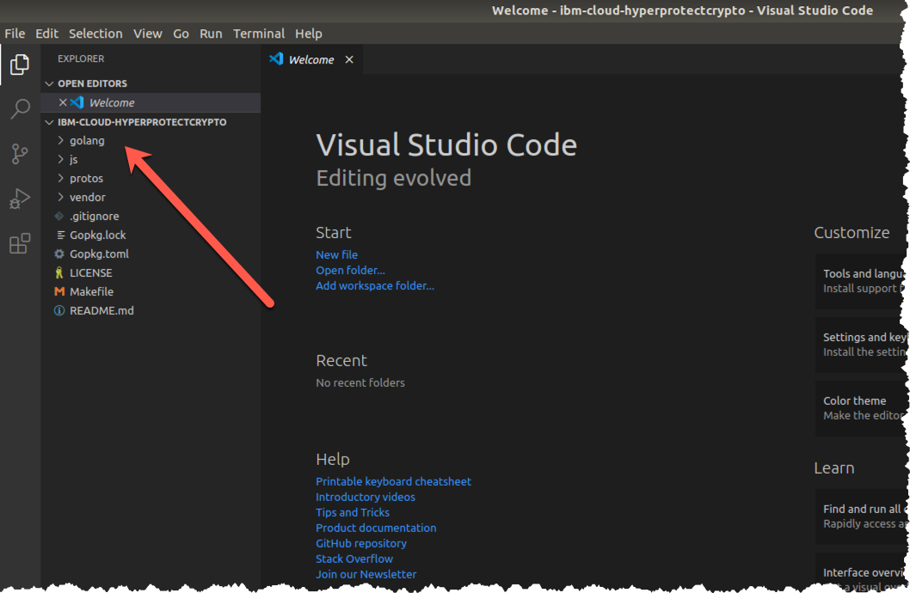
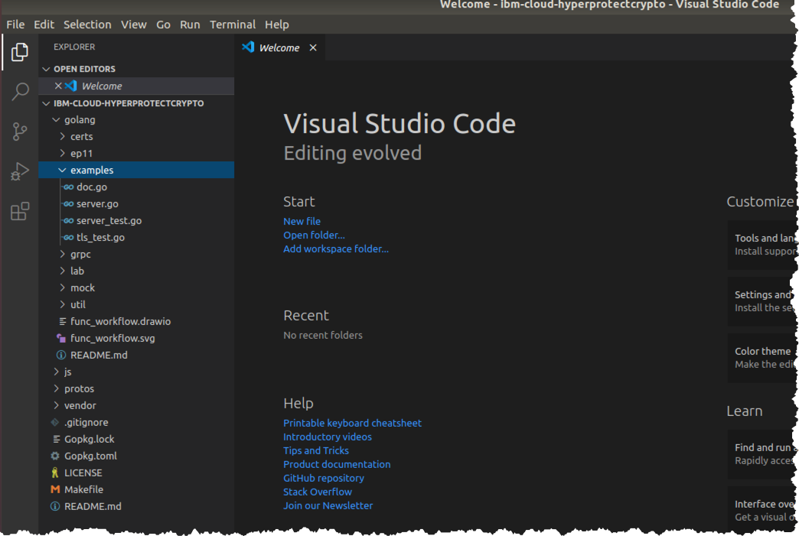
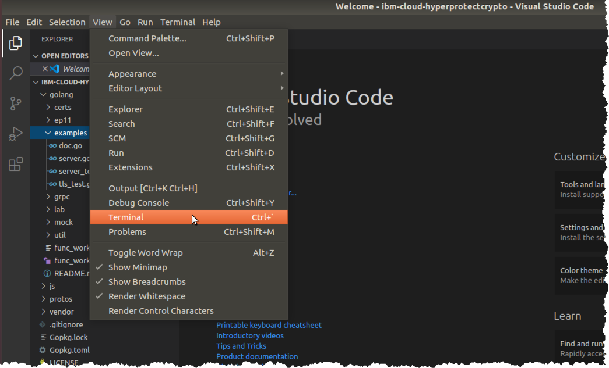
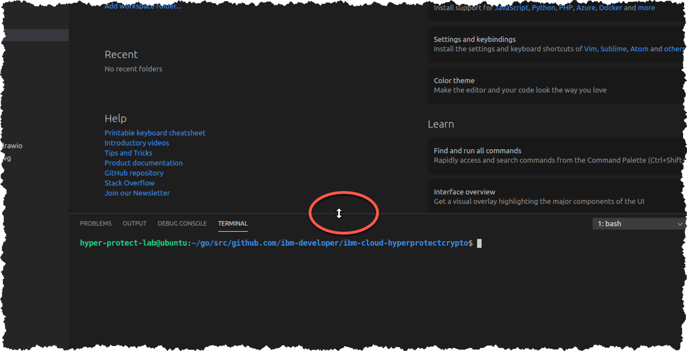
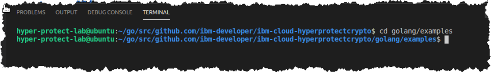

Run the GREP11 Sample code¶
Clone the GitHub repository which has the source code¶
-
Change to the
/home/hyper-protect-lab/go/src/github.com/ibm-developerdirectorycd ${HOME}/go/src/github.com/ibm-developer -
Ensure you are in the directory mentioned in the prior step1. You may be able to tell from the command prompt. You can also enter the
pwd("print working directory") to be sure, e.g.,:pwdExample Output
/home/hyper-protect-lab/go/src/github.com/ibm-developer -
Clone the GitHub repository used in this lab:
git clone https://github.com/silliman/ibm-cloud-hyperprotectcrypto.gitExample Output
Cloning into 'ibm-cloud-hyperprotectcrypto'... remote: Enumerating objects: 821, done. remote: Counting objects: 100% (821/821), done. remote: Compressing objects: 100% (551/551), done. remote: Total 821 (delta 227), reused 821 (delta 227), pack-reused 0 Receiving objects: 100% (821/821), 9.30 MiB | 8.42 MiB/s, done. Resolving deltas: 100% (227/227), done. -
Change to the
ibm-cloud-hyperprotectcryptodirectory which the priorgit clonecommand created:cd ibm-cloud-hyperprotectcryptoTip
Use the
pwdcommand if you cannot already tell by your command prompt that you are in the/home/hyper-protect-lab/go/src/github.com/ibm-developer/ibm-cloud-hyperprotectcryptodirectory.
Run the GREP11 sample code¶
-
Start Visual Studio Code within your current directory:
code . # if typing by hand don't forget the period (for current directory)In a moment you should see the Visual Studio Code window with your current directory structure shown in the Explorer pane in the upper left corner of the window:

-
Expand the
golangfolder, and then expand theexamplesfolder underneath it. Your Explorer pane should then look similar to this:
-
From the Visual Studio Code menu, select View then Terminal, as shown below:

-
You will see a terminal appear within Visual Studio Code at the bottom:

Tip
If you hover your mouse over the line above the terminal, when it turns into the "double arrow" as highlighted in the above screen snippet, you can drag the line to resize your terminal window. This tip may come in handy for you during the course of the lab.
-
Change to the
golang/examplesdirectory within the Visual Studio Code terminal that you just opened:cd golang/examplesYour terminal will look like this:

Tip
I have shown you how to use the Terminal window with Visual Studio Code, which you may find convenient. Your Ubuntu Desktop also provides a Terminal application that you can use to open one or more terminal windows. They behave the same, and which one you use is a personal choice, as long as you are in the correct directory that the instructions expect you to be in.
It is convenient to have a terminal window inside Visual Studio Code, but it comes at the expense of some screen real estate being taken away from the source code used in the exercises.
Use whichever method works best for you.
-
Test the GREP11 sample code:
go test -vExample Output
=== RUN Example_getMechanismInfo --- PASS: Example_getMechanismInfo (0.29s) === RUN Example_encryptAndDecrypt --- PASS: Example_encryptAndDecrypt (0.84s) === RUN Example_digest --- PASS: Example_digest (0.55s) === RUN Example_signAndVerifyUsingRSAKeyPair --- PASS: Example_signAndVerifyUsingRSAKeyPair (0.50s) === RUN Example_signAndVerifyUsingECDSAKeyPair --- PASS: Example_signAndVerifyUsingECDSAKeyPair (0.52s) === RUN Example_signAndVerifyToTestErrorHandling --- PASS: Example_signAndVerifyToTestErrorHandling (0.51s) === RUN Example_wrapAndUnwrapKey --- PASS: Example_wrapAndUnwrapKey (0.41s) === RUN Example_deriveKey --- PASS: Example_deriveKey (0.61s) === RUN Example_tls --- PASS: Example_tls (0.40s) PASS ok github.com/ibm-developer/ibm-cloud-hyperprotectcrypto/golang/examples 4.653s
Explanation of GREP11 sample code¶
The test used the go test subcommand, which does the following:
-
It looks for any file in the current directory named something_test.go. There are two such files in our directory, server_test.go and tls_test.go.
-
It looks for functions in these files named Example_something, and executes these functions.
-
At the bottom of each of these functions, a series of comment lines, starting with a header line, specifies what the expected output from the function should be. If the output from the function call matches the lines (except for the header line), then the test passes. Otherwise the test fails.
In the explorer pane, click on server_test.go or tls_test.go and examine the source code to see these lines. For example, lines 222-227 in server_test.go indicate what the expected output of the Example_encryptAndDecrypt function should be:
// Output:
// Generated AES Key
// Generated IV
// Encrypted message
// Decrypted message
// Hello, this is a very long and creative message without any imagination
Note
Go is a compiled language, and there are no executable files in this directory- the 'go test' command compiles the source code in the directory into an executable file in order to run the tests, and then cleans up afterwards by removing this executable.
Here is an itemization of the functions that our go test -v command tested, with a brief description of each. Our lab exercises in the subsequent sections will go into a little more depth on some of the more interesting of these functions.
-
Example_getMechanismInfo gets a list of PKCS #11 Mechanisms and then retrieves information about one of them. We will delve deeper into this in the first exercise.
-
Example_encryptAndDecrypt creates a secret (i.e., symmetric) key, encrypts data with it, then decrypts it, and ensures the data was unchanged after going through the encryption and decryption. We will look more into this in the second exercise.
-
Example_digest creates a digest2, or hash, against some data. Digests are used in digital signatures, which the next two tests cover.
-
Example_signAndVerifyUsingRSAKeyPair creates an RSA public and private key pair and uses the private key to create a digital signature and the public key to verify the digital signature.
-
Example_signAndVerifyUsingECDSAKeyPair creates an elliptic curve public and private key pair and uses the private key to create a digital signature and uses the public key to verify the digital signature. We go into greater depth (and discuss the differences between RSA and Elliptic Curves) in the third exercise.
-
Example_signAndVerifyToTestErrorHandling intentionally causes an error- after a signature is created, the program modifies a byte in it, so that when the signature is verified later, an error occurs. The test passes because the expected error message is listed in the expected test output.
-
Example_wrapAndUnwrapKey creates a public and private key pair and uses the public key to encrypt, or wrap, a symmetric key, which can then only be decrypted, or unwrapped, by the private key. The fourth and final exercise covers this topic.
-
Example_deriveKey illustrates a common algorithm where two sides of a connection each have a public and private key pair, and they use each other's public key in an algorithm that allows each of them to derive an identical secret, i.e., symmetric, key, without ever having sent that secret key across the connection. This is a common use case because encryption and decryption with a symmetric key is much faster than encryption and decryption with public and private keys. The two parties use relatively slow public key cryptography to derive this shared symmetric key at the beginning of their session, and then switch to using this symmetric key for the remainder of the session. This function and all of the functions preceding it in this list are in the server_test.go source file.
-
Example_tls creates an X.509 certificate, starts up an http server that uses this certificate, and has a client connect to the server with TLS authentication, which uses this certificate to establish a session. This test is in the tls_test.go source file.
Please proceed to the next section.
-
The Go compiler has traditionally been very picky about where source code files must reside. This situation has eased recently with the introduction of Go modules in newer releases, but our lab is not using Go modules. Go expects to find source files in the ${GOPATH}/src directory hierarchy, and if you do not have the GOPATH environment variable set, it expects fo find source files in the ${HOME}/go/src directory hierarchy. ↩
-
A hash is a fixed-length fingerprint for a set of input data of any size. Since there are an infinite number of possible input combinations, and the hash is fixed-length, in theory two different sets of data could produce the same hash. This is called a collision. In practice, the hash is of sufficient size, and the algorithm to produce it sufficiently complex, that it is computationally infeasible to produce the same hash with two different sets of input. If it can be demonstrated that two different sets of input can produce the same fingerprint by a hashing algorithm, then that algorithm will be considered insecure and fall into disuse in favor of stronger hashing algorithms. ↩